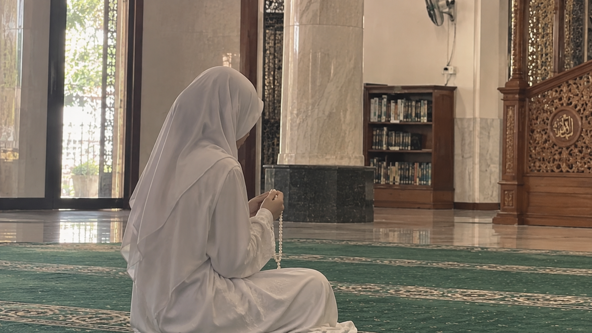

Dzikir Setelah Sholat

Dzikir sesudah atau setelah shalat adalah di antara dzikir yang mesti kita amalkan. Seusai shalat tidak langsung bubar, namun hendaknya kita merutinkan beristighfar dan bacaan dzikir lainnya.
Dzikir akan menguatkan seorang muslim dalam ibadah, hati akan terasa tenang dan mudah mendapatkan pertolongan Allah.
[1]
أَسْتَغْفِرُ اللهَ (3x)
اَللَّهُمَّ أَنْتَ السَّلاَمُ، وَمِنْكَ السَّلاَمُ، تَبَارَكْتَ يَا ذَا الْجَلاَلِ وَاْلإِكْرَامِ
Astagh-firullah 3x
Allahumma antas salaam wa minkas salaam tabaarokta yaa dzal jalaali wal ikrom.
Artinya:
“Aku minta ampun kepada Allah,” (3x).
“Ya Allah, Engkau pemberi keselamatan, dan dariMu keselamatan, Maha Suci Engkau, wahai Tuhan Yang Pemilik Keagungan dan Kemuliaan.”
Faedah: Rasulullah shallallahu ‘alaihi wa sallam jika selesai dari shalatnya beliau beristighfar sebanyak tiga kali dan membaca dzikir di atas. Al Auza’i menyatakan bahwa bacaan istighfar adalah astaghfirullah, astaghfirullah. [1]
[2]
لاَ إِلَـهَ إِلاَّ اللهُ وَحْدَهُ لاَ شَرِيْكَ لَهُ، لَهُ الْمُلْكُ وَلَهُ الْحَمْدُ وَهُوَ عَلَى كُلِّ شَيْءٍ قَدِيْرُ، اَللَّهُمَّ لاَ مَانِعَ لِمَا أَعْطَيْتَ، وَلاَ مُعْطِيَ لِمَا مَنَعْتَ، وَلاَ يَنْفَعُ ذَا الْجَدِّ مِنْكَ الْجَدُّ
Laa ilaha illallah wahdahu laa syarika lah, lahul mulku wa lahul hamdu wa huwa ‘ala kulli syai-in qodiir.
Allahumma laa maani’a limaa a’thoyta wa laa mu’thiya limaa mana’ta wa laa yanfa’u dzal jaddi minkal jaddu.
Artinya:
“Tiada Rabb yang berhak disembah selain Allah Yang Maha Esa, tidak ada sekutu bagi-Nya. Bagi-Nya puji dan bagi-Nya kerajaan. Dia Maha Kuasa atas segala sesuatu. Ya Allah, tidak ada yang mencegah apa yang Engkau berikan dan tidak ada yang memberi apa yang Engkau cegah. Tidak berguna kekayaan dan kemuliaan itu bagi pemiliknya (selain iman dan amal shalihnya yang menyelamatkan dari siksaan). Hanya dari-Mu kekayaan dan kemuliaan.”
[3]
لاَ إِلَـهَ إِلاَّ اللهُ وَحْدَهُ لاَ شَرِيْكَ لَهُ، لَهُ الْمُلْكُ وَلَهُ الْحَمْدُ وَهُوَ عَلَى كُلِّ شَيْءٍ قَدِيْرُ. لاَ حَوْلَ وَلاَ قُوَّةَ إِلاَّ بِاللهِ، لاَ إِلَـهَ إِلاَّ اللهُ، وَلاَ نَعْبُدُ إِلاَّ إِيَّاهُ، لَهُ النِّعْمَةُ وَلَهُ الْفَضْلُ وَلَهُ الثَّنَاءُ الْحَسَنُ، لاَ إِلَـهَ إِلاَّ اللهُ مُخْلِصِيْنَ لَهُ الدِّيْنَ وَلَوْ كَرِهَ الْكَافِرُوْنَ
Laa ilaha illallah wahdahu laa syarika lah. Lahul mulku wa lahul hamdu wa huwa ‘ala kulli syai-in qodiir.
Laa hawla wa laa quwwata illa billah. Laa ilaha illallah wa laa na’budu illa iyyaah. Lahun ni’mah wa lahul fadhlu wa lahuts tsanaaul hasan.
Laa ilaha illallah mukhlishiina lahud diin wa law karihal kaafiruun.
Artinya:
“Tiada Rabb (yang berhak disembah) kecuali Allah, Yang Maha Esa, tidak ada sekutu bagi-Nya. Bagi-Nya kerajaan dan pujaan. Dia Mahakuasa atas segala sesuatu. Tidak ada daya dan kekuatan kecuali (dengan pertolongan) Allah. Tiada Rabb (yang hak disembah) kecuali Allah. Kami tidak menyembah kecuali kepada-Nya. Bagi-Nya nikmat, anugerah dan pujaan yang baik. Tiada Rabb (yang hak disembah) kecuali Allah, dengan memurnikan ibadah kepadaNya, sekalipun orang-orang kafir sama benci.”
Faedah: Dikatakan oleh ‘Abdullah bin Zubair, Nabi shallallahu ‘alaihi wa sallam biasa membaca tahlil (laa ilaha illallah) di akhir shalat.[4]
[4]
سُبْحَانَ اللهِ (33 ×)
اَلْحَمْدُ لِلَّهِ (33 ×)
اَللهُ أَكْبَرُ (33 ×)
لاَ إِلَـهَ إِلاَّ اللهُ وَحْدَهُ لاَ شَرِيْكَ لَهُ، لَهُ الْمُلْكُ وَلَهُ الْحَمْدُ وَهُوَ عَلَى كُلِّ شَيْءٍ قَدِيْرُ
Subhanallah (33x)
Al hamdulillah (33x)
Allahu akbar (33 x)
Laa ilaha illallah wahdahu laa syarika lah. Lahul mulku wa lahul hamdu wa huwa ‘ala kulli syai-in qodiir.
Artinya:
“Maha Suci Allah (33 x), segala puji bagi Allah (33 x), Allah Maha Besar (33 x). Tidak ada Rabb (yang berhak disembah) kecuali Allah Yang Maha Esa, tidak ada sekutu bagi-Nya. Bagi-Nya kerajaan. Bagi-Nya pujaan. Dia-lah Yang Mahakuasa atas segala sesuatu.”
Faedah: Siapa yang membaca dzikir di atas, maka dosa-dosanya diampuni walau sebanyak buih di lautan. Kata Imam Nawawi rahimahullah, tekstual hadits menunjukkan bahwa bacaan Subhanallah, Alhamdulillah, Allahu akbar, masing-masing dibaca 33 kali secara terpisah.[6]
[5]
Membaca ayat Kursi setiap selesai shalat (fardhu).
Faedah: Siapa membaca ayat Kursi setiap selesai shalat, tidak ada yang menghalanginya masuk surga selain kematian.
[6]
Membaca surat Al-Ikhlas, Al-Falaq dan An-Naas setiap selesai shalat (fardhu).
Faedah: Tiga surat ini disebut mu’awwidzot.[8]
[7]
اَللَّهُمَّ إِنِّيْ أَسْأَلُكَ عِلْمًا نَافِعًا، وَرِزْقًا طَيِّبًا، وَعَمَلاً مُتَقَبَّلاً
Allahumma inni as-aluka ‘ilman naafi’a, wa rizqon thoyyiba, wa ‘amalan mutaqobbala
Artinya:
“Ya Allah, sungguh aku memohon kepada-Mu ilmu yang bermanfaat (bagi diriku dan orang lain), rizki yang halal dan amal yang diterima (di sisi-Mu dan mendapatkan ganjaran yang baik).” (Dibaca setelah salam dari shalat Shubuh)[9]
Semoga bisa diamalkan.